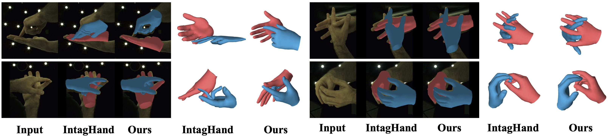

Results
Ours vs. IntagHand on InterHand2.6M

Ours vs. IntagHand on other dataset

Ours in real scenarios

Reconstructing interacting hands from a single RGB image is a very challenging task. On the one hand, severe mutual occlusion and similar local appearance between two hands confuse the extraction of visual features, resulting in the misalignment of estimated hand meshes and the image. On the other hand, there are complex interaction patterns between interacting hands, which significantly increases the solution space of hand poses and increases the difficulty of network learning. In this paper, we propose a decoupled iterative refinement framework to achieve pixel-alignment hand reconstruction while efficiently modeling the spatial relationship between hands. Specifically, we define two feature spaces with different characteristics, namely 2D visual feature space and 3D joint feature space. First, we obtain joint-wise features from the visual feature map and utilize a graph convolution network and a transformer to perform intra- and inter-hand information interaction in the 3D joint feature space, respectively. Then, we project the joint features with global information back into the 2D visual feature space in an obfuscation-free manner and utilize the 2D convolution for pixel-wise enhancement. By performing multiple alternate enhancements in the two feature spaces, our method can achieve an accurate and robust reconstruction of interacting hands. Our method outperforms all existing two-hand reconstruction methods by a large margin on the InterHand2.6M dataset. Meanwhile, our method shows a strong generalization ability for in-the-wild images.
@inproceedings{ren2023decoupled,
title={Decoupled Iterative Refinement Framework for Interacting Hands Reconstruction from a Single RGB Image},
author={Ren, Pengfei and Wen, Chao and Zheng, Xiaozheng and Xue, Zhou and Sun, Haifeng and Qi, Qi and Wang, Jingyu and Liao, Jianxin},
booktitle={Proceedings of the IEEE/CVF International Conference on Computer Vision (ICCV)},
year={2023}}